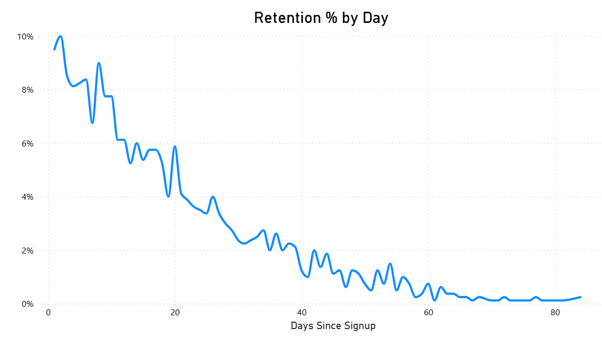

Retention Curve
Description
The Retention Curve shows what percentage of a user cohort continues to be active after signup, measured at regular intervals (e.g., Day 1, Day 7, Day 30). It helps evaluate long-term engagement, product stickiness, and user loyalty.
Recommended category: Customer (Engagement & Retention).
Visual Example

DAX Example
This example computes Day N retention (% of a signup cohort active N days later). Assume UserActivity with [UserId] and [ActivityDate], and Signups with [UserId] and [SignupDate].
Notes: This pattern works well with a "Retention Days" disconnected table so you can slice by Day 1, 7, 30. You can also build a full curve visual by plotting N on the X-axis and Retention % on the Y-axis.
SQL Example
This SQL calculates retention for cohorts by signup month and retention day.
Usage Notes
- Retention curves typically decline steeply at first (Day 1 → Day 7), then flatten. The shape tells you how sticky your product is.
- Compare curves across cohorts (signup month, acquisition channel, geography) to diagnose retention problems.
- Pair with Activation Rate for a full picture of user lifecycle: how many get started and how many stay.
- Common intervals: Day 1, 7, 14, 30, 60, 90. Choose based on your product cycle.